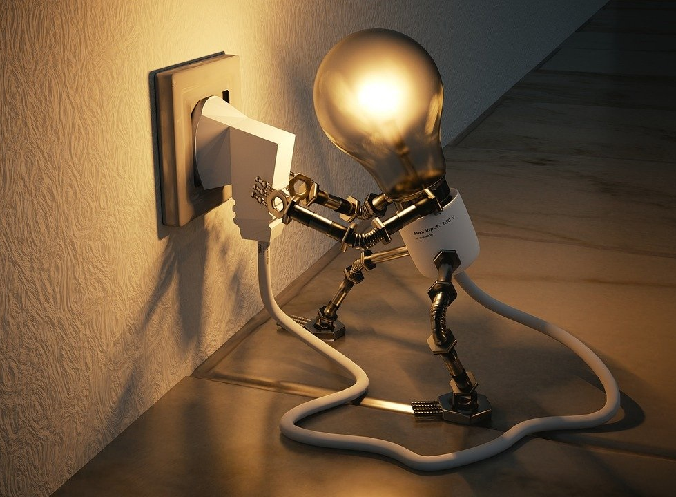

Tavanomaiset asennuskorkeudet
1700 mm - Palohälytyspainikkeet
1400 mm - Termostaatit, merkinantokojeet
1000 mm - Kytkimet

Pistorasiat
2200 mm - Jää- ja pakastinkaappien pistorasiat
2200 mm - Soittokellot
1900 mm - Seinätelevision pistorasiat
1900 mm - Kodinkoneiden pistorasiat pesu- ja kylpyhuoneissa
1800 mm - Liesituulettimen pistorasiat
1800 mm - Porrashuoneiden ja kellarikäytävien pistorasiat
1700 mm - Parvekkeen pistorasiat
1600 mm - Mikroaaltouunin pistorasiat
1200 mm - Keittiötason pistorasiat
1000 mm - Siivouspistorasiat (tai kytkimien alle)
300 mm - Astianpesukoneen pistorasiat
300 mm - Lieden liitäntärasia
200 mm - Pistorasiat
Valaisimet (seinässä)
1900 mm - Kylpyhuoneen ja wc:n peilivalaisin (peilin päällä)
1700 mm - Kylpyhuoneen ja wc:n peilivalaisin (peilin sivulla)
1400 mm - Työtasovalaisin kaapin alareunaan
1300 mm - Keittiön työvalaisin
Jakorasiat
2200mm - Jakorasiat (tai katossa)